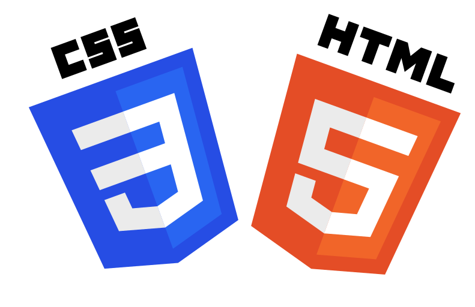

Skills/stacks



Soft Skills
Autonomie
Travail d'équipe
Logique
Stratégie
Je vous invite à visiter mon portfolio pour en savoir plus sur mon parcours, mes expériences et projets réalisés.
Salut, je m'appelle Hugo Yvert, j'ai 19 ans et je suis actuellement en formation à l'école du CESI à Hérouville/Caen en tant que développeur informatique. Sortant d'une année en BUT Réseaux et Télécommunication, j'ai rapidement compris que ma véritable passion résidait dans le développement informatique.
Titulaire d'un bac technologique STI2D option ITEC, j'ai acquis des comp√©tences solides en mati√®re de conception et de r√©solution de probl√®mes techniques. J'ai trouv√© ma v√©ritable voie dans le monde du code, o√π chaque ligne est une opportunit√© de cr√©er quelque chose de nouveau et innovant. üíª‚ú®
En dehors de ma vie professionnelle, je nourris une passion profonde pour le sport üèÄ. Le basket occupe une place sp√©ciale dans ma vie en tant que passe-temps, me permettant de garder un √©quilibre sain entre esprit et corps. Ma passion pour les voitures üöó, sous toutes leurs formes, et le sport automobile üèÅ illustre mon go√ªt pour la technologie et l'innovation, des traits qui se refl√®tent √©galement dans mon approche du d√©veloppement informatique.
Actuellement en quête de stages pour enrichir mes compétences et mettre en pratique mes connaissances, je suis ouvert aux opportunités d'alternance dès maintenant et pour l'année scolaire à venir. Explorez mon portfolio pour découvrir mes projets passés, mes compétences techniques et ma vision du monde du développement informatique.
N'h√©sitez pas √† me contacter pour discuter de collaborations potentielles ou simplement √©changer sur nos passions communes. üì¨
Merci de visiter mon site, et √† bient√¥t ! üöÄü뮂Äçüíª
Autonomie
Travail d'équipe
Logique
Stratégie
Je suis passionné par le développement informatique, avec de bonnes bases base en développement Front-End, l'ambition de devenir développeur Full-Stack serais une excellente solution. Mon objectif est de maîtriser la création de solutions web complètes, en alliant esthétique et fonctionnalité.
En parallèle, je projette de lancer une entreprise de développement web avec mon frère. Notre vision est de proposer des services personnalisés et innovants, en mettant nos compétences complémentaires au service des besoins spécifiques de nos clients.
Par ailleurs, je suis également attiré par le domaine du développement de jeux vidéo. Si le projet d'entreprise familiale ne se concrétise pas, j'envisage d'explorer cette voie, fasciné par la possibilité de créer des univers interactifs et immersifs.
Notre démarche s'inscrit dans une volonté de qualité et d'excellence, avec l'ambition de contribuer activement à l'évolution du secteur du développement web et du jeu vidéo.
Tel : 06 49 58 87 43